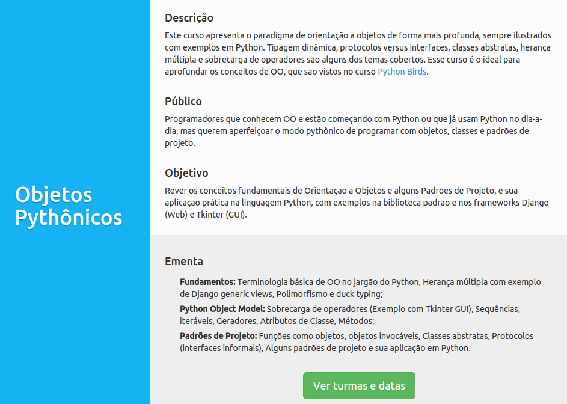

II Encontro PythonVale
Orientação a Objetos em Python
Bernardo Fontes
São José dos Campos/SP
30 de Maio de 2015
## Básicos de Orientação a Objetos (OO)
- ### O que é um **objeto**?
- ### Definições **variam** por linguagem
## Em Python
- ### Pode ser referenciado a uma **variável**
- ### Pode ser utilizado como **parâmetro em funções**
## Em Python
- ### **Tudo** é um objeto
## Um inteiro é um objeto
```python
In [1]: a = 4
In [2]: a.__sub__(3)
Out[2]: 1
In [3]: print dir(a)
['__abs__', '__add__', '__and__', '__class__', '__cmp__', '__coerce__', '__delattr__', '__div__', '__divmod__', '__doc__', '__float__', '__floordiv__', '__format__', '__getattribute__', '__getnewargs__', '__hash__', '__hex__', '__index__', '__init__', '__int__', '__invert__', '__long__', '__lshift__', '__mod__', '__mul__', '__neg__', '__new__', '__nonzero__', '__oct__', '__or__', '__pos__', '__pow__', '__radd__', '__rand__', '__rdiv__', '__rdivmod__', '__reduce__', '__reduce_ex__', '__repr__', '__rfloordiv__', '__rlshift__', '__rmod__', '__rmul__', '__ror__', '__rpow__', '__rrshift__', '__rshift__', '__rsub__', '__rtruediv__', '__rxor__', '__setattr__', '__sizeof__', '__str__', '__sub__', '__subclasshook__', '__truediv__', '__trunc__', '__xor__', 'bit_length', 'conjugate', 'denominator', 'imag', 'numerator', 'real']
In [4]: a.__class__
Out[4]: int
```
## Objetos no Conceito de OO
- ### **Abstrações de entidades** que surgiram na discussão do domínio (Paciente)
- ### **Estruturas lógicas** para auxiliar operações do domínio (Conexão com o BD)
- ### Definem a estratégia de **design** do sistema
## Como Determinar um Objeto
- ### Conjunto de valores associados a ele (**Estado**)
- ### Ações que o objeto pode desempenhar (**Comportamento**)
- ### Um objeto possui Estado **e/ou** Comportamento
## Como Determinar um Objeto
- ### Conjunto de valores associados a ele (**Estado**)
- ### Ações que o objeto pode desempenhar (**Comportamento**)
- ### Um objeto possui Estado **e/ou** Comportamento
## Apresentando as Classes
- ### **Descrevem** como definir o estado e os comportamentos de um objetos
- ### Criam **instâncias de objetos**
## Exemplo em Python
```python
class Pessoa(object): # object não necessário em Python 3
pass
###
In [55]: bernardo = Pessoa()
In [56]: bernardo.__class__
Out[56]: __main__.Pessoa
In [57]: Pessoa.__base__
Out[57]: object
```
## Definindo o Estado
- ### Avaliação do **conjunto de valores** de atributos de um objeto
- ### De **instância**: armazenam dados da instância em questão
- ### De **classe**: armazenam dados da classe que são comuns para todas as instâncias
## Encapsulando o Estado
- ### **Públicos**: atributos que podem ser utilizados por qualquer outro objeto
- ### **Privados**: atributos só podem ser utilizados no contexto interno da classe
## Exemplo em Python
```python
class Pessoa(object):
opcoes_sexo = ('m', 'f') # atributo de classe
def __init__(self, nome, sexo, nascimento):
self.nome = nome # atributo
self.sexo = sexo # atributos de instância públicos
self.__nascimento = nascimento # atributo de instância privado
```
## Exemplo em Python
```python
In [3]: Pessoa.opcoes_sexo
Out[3]: ('m', 'f')
In [4]: bernardo = Pessoa(nome='Bernardo', sexo='m', nascimento=date(1988, 9, 22))
In [5]: print bernardo.nome, bernardo.sexo
Bernardo m
In [6]: print bernardo.__nascimento
---------------------------------------------------------------------------
AttributeError Traceback (most recent call last)
in ()
----> 1 print bernardo.__nascimento
AttributeError: 'Pessoa' object has no attribute '__nascimento'
```
## Fluxo de Construção
```python
Pessoa(nome='Bernardo', sexo='m', nascimento=date(1988, 9, 22)) # chamada ao construtor
Pessoa.__new__() # responsável pela alocação de recursos
Pessoa.__init__(nome, sexo, nascimento) # faz a inicialização do objeto
```
## Definindo o Comportamento do Objeto
- ### Métodos que executam **operações** sobre a instância
- ### Respeitam as mesmas regras de **encapsulamento**
## Exemplo em Python
```python
class Pessoa(object):
opcoes_sexo = ('m', 'f')
def __init__(self, nome, sexo, nascimento):
self.nome = nome
self.sexo = sexo
self.__nascimento = nascimento
def calcula_idade(self):
# dumb way
hoje = date.today()
return hoje.year - self.__nascimento.year
#####
In [35]: bernardo.calcula_idade()
Out[35]: 26
```
## Lidando com Encapsulamento Pythonicamente
- ### O **conceito** de getter/setter é válido, o problema é o **como**
- ### Python **properties**!
- ### Regra: o sistema não aceita atualizar nascimentos para antes de 1980
## Exemplo em Python
```python
class Pessoa(object):
opcoes_sexo = ('m', 'f')
def __init__(self, nome, sexo, nascimento):
self.nome = nome
self.sexo = sexo
self.__nascimento = nascimento
def calcula_idade(self):
hoje = date.today()
return hoje.year - self.__nascimento.year
@property
def nascimento(self):
return self.__nascimento
@nascimento.setter
def nascimento(self, data):
if data.year < 1980: #>
raise ValueError("Data antes de 1980.")
self.__nascimento = data
```
## Exemplo em Python
```python
In [43]: bernardo = Pessoa(nome='Bernardo', sexo='m', nascimento=date(1988, 9, 22))
In [44]: bernardo.nascimento
Out[44]: datetime.date(1988, 9, 22)
In [45]: bernardo.nascimento = date(1990, 1, 1)
In [46]: bernardo.nascimento
Out[46]: datetime.date(1990, 1, 1)
In [47]: bernardo.nascimento = date(1970, 1, 1)
---------------------------------------------------------------------------
ValueError Traceback (most recent call last)
in ()
----> 1 bernardo.nascimento = date(1970, 1, 1)
in nascimento(self, data)
18 def nascimento(self, data):
19 if data.year < 1980:
---> 20 raise ValueError("Data antes de 1980.")
21 self.__nascimento = data
ValueError: Data antes de 1980.
```
## Definindo o Comportamento da Classe
- ### Podemos definir métodos que podem ser executados **sem instâncias** das classes
- ### Métodos de **classe**: recebem a classe como parâmetro
- ### Métodos de **estáticos**: não recebem a classe como parâmetro
## Exemplo em Python
```python
class Pessoa(object):
opcoes_sexo = ('m', 'f')
## Código antigo
@classmethod
def novo_homem(cls, nome, nascimento):
return cls(nome, cls.opcoes_sexo[0], nascimento)
@staticmethod
def exemplo():
pass
###
In [51]: bernardo = Pessoa.novo_homem(nome='Bernardo', nascimento=date(1988, 9, 22))
In [52]: bernardo.sexo
Out[52]: 'm'
```
## Outros 3 Pontos Sobre OO
- ### Sobrecarga de Operadores
- ### Sistema de Herança
- ### Polimorfismo
Sobrecarga de Operadores
Métodos que definem como os objetos vão se comportar quando aplicados a operadores (-, +, /, > ect)
## Exemplo em Python
```python
class Data(object):
def __init__(self, dia, mes, ano):
self.dia = dia
self.mes = mes
self.ano = ano
def __eq__(self, other):
return self.dia == other.dia and self.mes == other.mes and self.ano == other.ano
def __repr__(self):
return "{dia}/{mes}/{ano}".format(**self.__dict__)
####
In [3]: aniversario = Data(22, 9, 1988)
In [4]: nascimento = Data(22, 9, 1988)
In [5]: print aniversario == nascimento
True
In [6]: print aniversario
22/9/1988
```
## Sistema de Heranças
- ### Utilização de uma classe como **base** para uma classe que a herda para **adicionar comportamento**
- ### Respeito ao **contrato** da classe pai
## No Python
- ### Herança Simples
- ### Herança Múltipla
- ### Classes Abstratas
- ### Não suporta Interfaces
## Herança Simples
```python
class Animal(object):
def __init__(self, especie):
self.especie = especie
class Cao(Animal):
def __init__(self):
super(Cao, self).__init__('Canis lupus familiaris')
def latir(self):
print 'au'
###
In [27]: gato = Animal('Felis catus')
In [28]: gato.especie
Out[28]: 'Felis catus'
In [29]: gato.latir()
---------------------------------------------------------------------------
AttributeError Traceback (most recent call last)
in ()
----> 1 gato.latir()
AttributeError: 'Animal' object has no attribute 'latir'
In [30]: cao = Cao()
In [31]: cao.especie
Out[31]: 'Canis lupus familiaris'
In [32]: cao.latir()
au
```
## Herança Múltipla
- ### **MRO**: Method Resolution Name
- ### [Django Class-Based Views](https://github.com/django/django/tree/master/django/views/generic)
- ```python
class UpdateView(SingleObjectTemplateResponseMixin, BaseUpdateView):
"""
View for updating an object,
with a response rendered by template.
"""
template_name_suffix = '_form'
```
## Classes Abstratas
- ### **Classes bases** que definem **métodos obrigatórios** a serem implementadas pelas classes filho
- ### Em Python, prefiro **Duck Typing**: preocupação com a semântica ao invés de herança ([referência](https://stackoverflow.com/questions/17028722/is-this-duck-typing-in-python))
## Módulo abc
```python
from abc import ABCMeta, abstractmethod
class Animal(object):
__metaclass__ = ABCMeta
@abstractmethod
def faz_barulho(self):
pass
class Cao(Animal):
def faz_barulho(self):
return "au au"
class Gato(Animal):
pass
#####
In [34]: cao = Cao()
In [35]: cao.faz_barulho()
Out[35]: 'au au'
In [36]: gato = Gato()
---------------------------------------------------------------------------
TypeError Traceback (most recent call last)
in ()
----> 1 gato = Gato()
TypeError: Can't instantiate abstract class Gato with abstract methods faz_barulho
```
## Polimorfismo
- ### Classes que descrevem métodos com **mesmo contrato** mas com **comportamentos diferentes**
- ### Vantagem: não precisamos nos preocupar com **quem** estamos falando, mas apenas se o objeto sabe responder **como** queremos
## Exemplo Python
```python
In [2]: dict_obj = {'nome': 'bernardo', 'idade': 26}
In [3]: list_obj = ['pedra', 'papel', 'tesoura']
In [4]: tuple_obj = (9, 3)
In [6]: dict_obj.__len__(), list_obj.__len__(), tuple_obj.__len__()
Out[6]: (2, 3, 2)
In [7]: len(dict_obj), len(list_obj), len(tuple_obj)
Out[7]: (2, 3, 2)
In [8]: dict_obj.__getitem__('nome'), list_obj.__getitem__(1), tuple_obj.__getitem__(0)
Out[8]: ('bernardo', 'papel', 9)
In [9]: dict_obj['nome'], list_obj[1], tuple_obj[0]
Out[9]: ('bernardo', 'papel', 9)
```
## Quem aqui sabe fazer Orientação a Objetos?
- ### Eu **não sabia**
- ### Saber as ferramentas **não é** saber OO
## Responsabilidades dos Objetos
- ### Alterar seu próprio estado --> **Encapsulamento**
- ### Colaboração com outros objetos através da **troca de mensagens**
- ### Colaboração >> Dependência >> Complexidade >> Acoplamento
## Problema de alto acoplamento
- ### Rigidez: dificuldade de **mudanças**
- ### Fragilidade: pontos de falha por **efeito cascata**
- ### Imobilidade: sem **reutilização** de partes do software
- ### Viscosidade: mais fácil **adicionar hacks** que soluções corretas
## Princípios de OO
- ### S
- ### O
- ### L
- ### I
- ### D
## Princípios de OO
- ### Single Responsibility Principle
- ### Open Closed Principle
- ### Liskov Substitution Principle
- ### Interface Segregation Principle
- ### Dependency Inversion Principle
## Single Responsibility Principle
- ### Nunca deve exstir mais de **uma razão para modificar** algo em uma classe.
## Open Closed Principle
- ### Toda classe deve estar **aberta para extensão**, mas **fechada para modificação**
## Estudar Design Pattenrs
Applying UML and Patterns
Curso Objetos Pythônicos

Object Mentor (SOLID)

GOOS Guided By Tests

Design Patterns